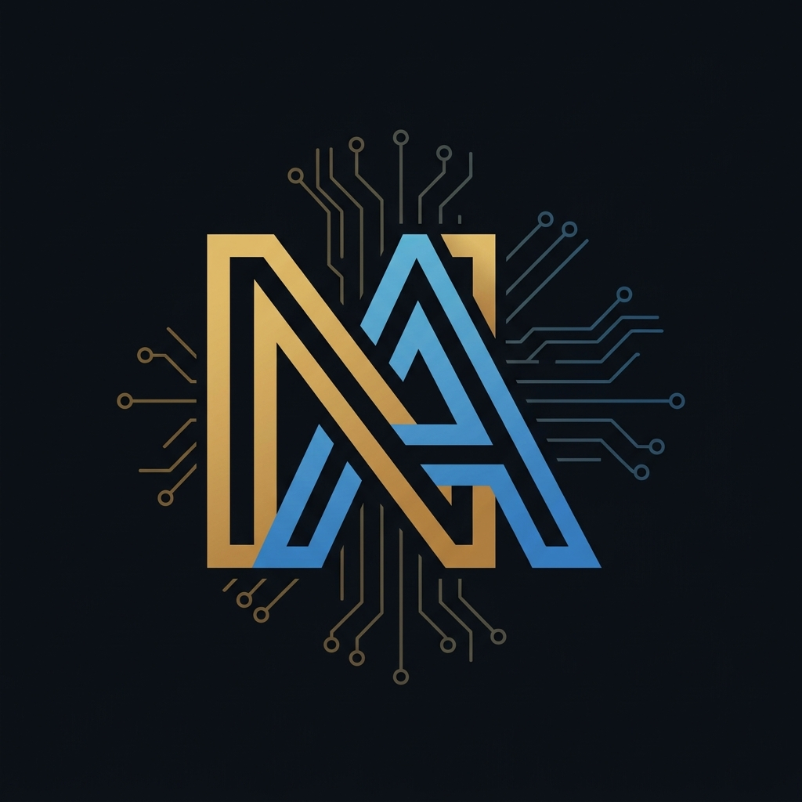

Étudiante ingénieure à l'INPT Rabat. Je conçois des solutions technologiques à l'intersection du hardware et du software.

Ce qui me motive au quotidien, c'est de faire le pont entre le matériel et l'interface utilisateur. J'aime autant câbler un circuit logique sur un FPGA que coder une interface web pour visualiser ses données.
Issue des classes préparatoires (CPGE Koutoubia, filière PSI), j'ai appris la rigueur et la résolution de problèmes complexes, ce qui me permet d'aborder les défis techniques avec assurance.
Conception complète d'une base relationnelle. Modélisation via MCD/MLD, implémentation en SQL et optimisation avancée des requêtes avec gestion stricte de l'intégrité référentielle.
Création d'un site web interconnecté avec un microcontrôleur ESP32 pour remonter des données de capteurs environnementaux en temps réel sur une interface responsive.
Développement d'un lecteur RFID avec synchronisation automatique vers une base de données locale et Google Sheets via API. Intègre un système de logs et d'alertes.